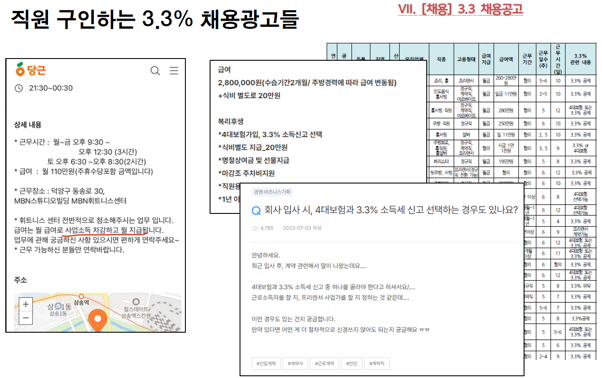

비임금노동자 현황과 쟁점
비임금 노동자 증가 추세 통계를 중심으로
최근 노동시장에서 나타나고 있는 새로운 현상. 특수고용도 아니고 플랫폼노동도 아닌 직종·업종에서 3.3% 사업소득세 원천징수 방식의 ‘프리랜서형’ 비(非)근로계약 노동이 확산되는 문제에 대해 비임금노동 통계를 중심으로 분석
非특고 非플랫폼 프리랜서
최근 노동시장에서 나타나고 있는 새로운 현상. 특수고용도 아니고 플랫폼노동도 아닌 직종·업종에서 3.3% 사업소득세 원천징수 방식의 ‘프리랜서형’ 비(非)근로계약 노동이 확산되는 것
구인구직을 중개하는 다양한 플랫폼에서는 “3.3%만 떼고 급여 지급한다”는 광고들을 흔히 볼 수 있으며, 각종 포털사이트에서 “3.3%”를 검색해보면 아르바이트에게 3.3% 세금을 떼고 4대보험에 가입하지 않은 경우에 대한 문의 글이 수두룩하다.

새로운 현상인 경우
1997년 외환위기 이후 2000년대 초반에 나타났던 화물운송, 건설레미콘, 학습지교사 등 특수고용형태 근로자 문제나 최근에 플랫폼 기반 산업이 발전하면서 배달라이더, 택배기사, 클라우드워크 등에서 나타나는 개인사업자 형태의 고용형태 증가와 일정한 유사성이 있고 중첩되는 부분도 있지만,
과거에는 근로계약을 체결하는 것이 일반적이었던 음식점, 의류판매점, 커피전문점, 슈퍼마켓 등 통상적인 업종이나 직종에서 사실상 ‘특별한 이유도 없이’ 프리랜서 계약이 발생하고 있다는 점에서 분명한 차이
현장 단위에서는 권리찾기유니온이 지난 2021년 5월 이후 사업주들이 5인 미만 사업장에 일부 근로기준법이 적용되지 않는 이점을 노리고 사회보험도 가입하지 않기 위해 ‘가짜 3.3’ 계약을 남용하고 있다는 문제를 제기하기 시작
객관적인 실태조사로는 지난해 9월 노원구의 의뢰를 받아 고려대 노동문제연구소가 진행했던 <노원구 5인미만 사업장 노동자 실태조사> (이종선 et al., 2023)에서 처음으로 확인
고려대 노동문제연구소의 실태조사에서는 노원구의 5인 미만 사업체에서 일하는 노동자 가운데 5명 중 1명(20.3%)이 3.3% 소득세 납부방식을 택하고 있는 것으로 확인. 3.3% 납부방식을 택한 노동자들의 고용보험 가입률은 40%를 넘지 못했고, 건강보험과 국민연금의 직장가입률은 10% 초반 수준에 불과
영세사업장 문제만은 아니다
이같은 일들은 5인 미만 사업장에서만 발생하는 것이 아니라 다양한 규모의 사업장에서 발생. 근로복지공단이 쿠팡 물류 자회사 쿠팡로지스틱스(CLS)에 대해 실시한 전수조사 결과 최근 3년간 무려 40,948명의 임금노동자와 노무제공자가 3.3% 사업소득세 원천징수 방식의 개인사업자로 위장계약을 맺은 것으로 드러남.
특고와 플랫폼노동으로 분류되는 택배기사들뿐만 아니라 물류센터에서 일하는 위탁업체 소속 일반 노동자들도 대거 포함. 근로복지공단의 발표 직후 개최된 국회 토론회에서도 이 문제가 다시 다뤄짐.1
- 씨제이올리브영 물류센터에서도 일용직 노동자를 개인사업자로 위장해 고용산재보험 가입을 누락시켜온 사실이 확인됨(매일노동뉴스 보도).
- 그동안 노동시장 내 구조적인 격차와 차별의 문제와 노동운동의 연대와 조직화의 과제와 관련해서 직간접 고용 비정규직과 중소하청 및 영세사업장 노동자 문제와 더불어 특고·플랫폼 노동자가 중심을 이뤄왔다면, 하나의 영역을 추가해서 ‘가짜 3.3’ 문제와 ‘비임금 노동화’ 문제를 다른 각도에서 추가할 필요
다단계 하청구조와 가짜 3.3 프리랜서 계약

비임금 노동자 규모 추정
- 통계청 경제활동인구 부가조사(2024. 8)에서 정흥준(2018), 김준영(2023) 추정 비율만 반영. ‘가짜 3.3’ 인원은 고려대 노동문제연구소 (2024)의 노원구 5인미만 사업장 추정치 적용
{kind=link}
가짜 ‘3.3%’ 고용형태의 증가 배경
’가짜 3.3’으로 불리는 프리랜서형 비(非)근로계약은 사후에 계약의 실질적인 내용을 따져 정부나 법원에 의해 노동자로 판단될 가능성이 있지만, 현실에서는 당사자 간에 고용계약이 아니라는 잘못된 인식 하에 노동법과 사회보험법 등을 준수하지 않아도 되는 것으로 오인될 가능성이 큼
일자리가 급한 노동자들로서는 사업 주들의 요구를 거부하기가 쉽지 않은 상태에서 이른바 ’실수령액’이 덜 줄어드는 방식을 선택하라는 식으로 회유나 압력을 가하기 때문에 마지못해 받아들이고 마는 것임
2020년 코로나 위기 발발 이후 위기 상황을 맞아 전국민고용보험 확대가 추진되고, 국세청에 대한 소득신고 및 과세자료 제출 주기의 단축이 추진
경기전망이 불투명한 상황에서 인건비 부담은 크게 다가오고, 사회보험 가입 의무가 점점 확대되고 촘촘해지는 상황에서 ‘사업소득세 3.3%’ 방식으로 계약하게 되면, 비록 불법이고 탈법이지만 모든 부담에서 벗어날 수 있는 탈출구가 열린다는 생각을 하게 될 수 있음
2024년 현재 월 250만원을 소정급여 기준으로 할 경우 4대보험료는 노동자가 월평균 약 24만원, 사업주는 28만원을 납부해야 하지만, 3.3% 소득세 방식을 택할 경우 낮은 사업소득 원천세율(3.3%)을 적용할 수가 있고 고용주가 부담해야 할 사회보험료를 전혀 부담하지 않으면서도 인건비를 세무상으로 경비처리하는데 는 아무런 문제가 없음
원천세와 사회보험료
- 고용보험(노사 0.9% + 사 직업능력개발부담금 0.25%), 건강보험(노사 7.09% / 2, 장기요양보험 포함), 국민연금(노사 각각 4.5%), 산재보험(평균 1.47% 사용자만)
{kind=link}
특고나 기타종사자 규모는 큰 변화 없음
- 하지만 통계청이나 고용노동부의 고용통계에서 이러한 ‘가짜 3.3’ 노동자들이 실제로 어느 정도의 규모인지 제대로 알기는 어렵다.
- 가구조사인 통계청의 경제활동인구조사는 본인이나 가족 구성원이 응답하기 때문에 종사상지위를 ’임금근로자’로 응답할 가능성이 훨씬 더 높다.
- 고용노동부의 사업체노동력조사에서는 상용, 임시일용 외의 특수고용과 유사한 범주로 ’기타 종사자’라는 유형을 구분하고 있는데 사업체들이 충실하게 보고하지 않을 가능성이 많다.
- 통계에 제대로 포착이 된다면 우선 특수고용 통계에서 가장 먼저 변화가 나타나야 할 것이지만 그러한 변화는 나타나지 않고 있다. 통계청의 경활 부가조사와 고용노동부의 사업체노동력조사에서 특수고용과 기타종사자의 규모와 비중은 2016년 이후 큰 변화를 보이지 않고 있다.

고용통계와 국세통계의 괴리
고용통계에서 임금노동자 비중은 지속적으로 증가. 2016년 임금노동자 비중은 73.9%이었는데, 2023년에는 76.3%를 차지. 이 기간 동안 비임금취업자는 27만명이 감소해서 비임금근로의 비중은 27.1%에서 23.7%로 감소
그런데 국세통계에서는 같은 기간 근로소득자가 2016년 1,774만명에서 2022년 2,054만명으로 280만명 늘어났지만 통합소득자에서 근로소득자가 차지하는 비중은 81.5%에서 78.3%로 오히려 감소.

N잡러 증가로 설명 안되는 순수종합소득자 증가
고용통계에서는 하나의 주된 일자리로 종사상지위를 선택하도록 하지만 근로소득과 종합소득 신고에는 중복된 인원이 많다. 통합소득 통계라는 것도 근로소득과 종합소득을 인별로 합산해서 중복 인원을 제거한 것
그렇기 때문에 1천만명 규모로 늘어난 비임금노동 가운데 근로소득자이면서 추가적인 사업소득이나 재산소득 등이 있는 사람들이 상당수 포함. 직장인들의 복수일자리 취업 등 N잡러의 증가 현상도 임금노동자와 종합소득자가 동시에 증가하는 현상을 설명할 수 있는 근거
다만, 근로소득이 전혀 없는 순수종합소득 신고자들도 같은 기간 동안 201만명이나 증가해서 비중이 18.5%에서 22.4%로 늘어난 것은 확실히 추가적인 설명이 필요. 자영업자의 절대 수가 감소하는데도 불구하고 근로소득 없이 순수종합소득만 신고하는 사람이 이처럼 크게 증가했다는 것은 소득파악률 제고나 성실납세만으로 설명하기는 어려움.
적어도 일정 부분에서는 고용통계에서 임금노동자로 파악되는 취업자가 국세청 소득통계에서는 근로소득자가 아닌 사업소득자로 잡히고 있는 것은 아닌지 의심해봐야 할 일
경제활동인구 취업자와 소득신고자의 인원 추이

원천징수 인적용역 사업소득자의 증가
- 원천징수 사업소득자란 소득세법과 부가세법상 별도의 사업체나 시설 없이 노무나 용역을 제공하는 개인사업자. 현행 세법상으로는 39개의 업종이 사업소득세가 원천징수되는 인적용역에 해당
- 이들 중에는 의사와 수의사 같은 고도의 전문직 종사자도 있고, 작곡가, 저술가, 운동선수 등 전형적인 프리랜서 직업도 있지만, 고용보험법과 산재보험법에서 노무제공자로 규정하는 특수고용과 플랫폼종사자들도 세법상 여기에 포함2 일반 직원이나 아르바이트로 일하는 사람들도 사업소득세를 원천징수하는 방식으로 일했으면 기타자영업 코드로 분류돼 여기에 포함
- 가장 최근의 국세통계 자료를 통해 최근의 인적용역 사업소득자의 가파른 증가가 과연 플랫폼산업의 증가 때문이었는지 아니면 그것으로는 거의 설명할 수 없는 다른 요인 때문인지를 확인해 볼 필요
- 모든 인적용역 사업소득자가 가짜 3.3이라고 할 수는 없으므로 39개 인적용역 직종을 특성별로 4개의 큰 그룹(병의원, 일반프리랜서, 특고플랫폼, 그리고 기타자영업)으로 구분.
39개 원천징수 사업소득자 직종별 신고인원 추이

19개 특고 플랫폼 고용보험 적용 직종(노무제공자)
{kind=link}
인적용역 사업자 그룹별 특징과 추이
병의원은 다른 직종들과 소득액과 과세액의 차이가 매우 크지만 인원수에서는 소수이고 규모도 약간 감소
예술인, 작가, 학자, 직업운동선수 등과 학원강사, 음료배달, 다단계판매, 목욕관리사 등 비교적 오래 전부터 프리랜서 방식의 업무와 소득신고가 이뤄져 온 직종들. 1인미디어창작자(유튜버)는 비교적 최근에 포함. 2018년을 정점으로 298만명에서 262만명 수준으로 감소하는 추세로 이들이 3.3% 유형의 증가를 이끈다고 보기는 어려움
다음으로 특고·플랫폼 직종이 있는데 고용보험과 산재보험이 적용되는 19개 직종3이 여기에 해당. 그동안 국세청은 국세통계상으로 3.3% 납부자 증가의 주된 원인을 이쪽 요인으로 설명. 국세청이 고용·산재보험 가입대상 직종과 일치시키기 위해 인적용역 직종코드를 분리하고 신설한 것도 이들 직종.
특고와 플랫폼 직종은 41만명 규모에서 2022년에는 120만명으로 80만명 가까이 늘었다가 2023년에는 104만명 규모로 줄어듦. 코드를 분리하거나 신설하는 과정에서 다른 부문에서 집계되던 인원이 유입돼 늘어난 효과가 대부분. 또한 이들 직종은 워낙 어떤 업무에 해당하는 일인지가 명확하기 때문에 일반적인 서비스업 업무에 대해 이들 직종의 코드로 신고할 수는 없음. 음식점이나 카페의 직원을 채용하면서 특고나 플랫폼코드를 사용할 수는 없기 때문
특고직종 외 남는 기타자영업
마지막으로 남는 기타자영업이 결국 문제. 기타자영업(940909)은 단 하나의 업종코드인데도 가장 많은 인원을 포함하고 있으며 특고·플랫폼 직종의 신설된 직종코드가 대부분 기타자영업에서 빠져나간 뒤에도 더 빠르게 큰 규모로 증가
2016년 174만명이었던 기타자영업은 2023년 485만명으로 300만명 이상 늘어남. 인적용역 사업소득자에서 차지하는 비중도 2016년 33.5%에서 2023년에는 56.3%로 절반을 넘게 됨. 인적용역 사업소득자 증가 인원의 80% 이상이 여전히 기타자영업에서 발생

지속적인 사업소득 취업자는 절반 규모
가장 최근에 국회에 제출된 자료를 통해서 새롭게 확인한 것은 연간 단위의 인적용역 사업소득 신고자의 숫자는 860만명 규모이지만, 월평균 신고인원은 407만명 규모로 확인
연간 소득활동이 매우 짧은 기간만 이루어지는 간헐적인 취업자를 제외할 경우 지속적으로 취업하고 있는 인원은 전체의 절반 정도 규모. 그러나 이것만으로 실질적이고 구체적인 실태 파악은 여전히 어려운 상태

노동패널을 통한 추가 확인
노동패널은 비임금 노동자와 임금 노동자 모두에게 각각 별도의 확인 설문 문항으로 “귀하는 프리랜서로 일하십니까”라는 설문 문항을 가지고 있음
임금노동자 중에서 프리랜서로 일하고 있다고 응답한 경우를 ’임금 프리랜서’로 정의하고, 비임금근로 취업자 가운데 프리랜서로 일하고 있다고 응답한 경우를 ’비임금 프리랜서’로 정의

재정패널을 통한 확인
재정패널에서는 지난해 소득신고 유형에서 어떤 방식으로 소득을 신고했는지를 확인 가능
주된 일자리가 임금노동자였던 사람이 당해연도 소득을 신고할 때는 근로소득이 아니라 종합소득만 신고한 경우가 22만건에 이르고 그 비율이 동일한 추세로 상승하고 있음

쟁점과 과제 - 확인한 사실들
‘3.3% 사업소득세’ 방식의 근로계약이 늘어나고 있는 상황에서 고용통계와 국세통계의 괴리가 나타나고 있음
고용통계를 통해서는 이같은 불법, 편법계약이 늘어나는지 제대로 포착할 수 없는 한계가 드러나고 있음
인적용역 방식의 비임금근로가 늘어나는 것이 단지 플랫폼산업의 확산 때문이 아니라는 점
이같은 상황에서 필요한 사항은 두 가지로 압축할 수 있음
하나는 국세청이 앞으로는 고용형태 변화의 문지기 역할을 해야 할 필요성이 커지게 될 것임. 고용통계에서는 소득신고 방식의 변화 같은 것이 제대로 실시간으로 포착되지 않는 반면, 세무당국인 국세청에 대한 소득신고와 과세정보 제공 단계에서 편법적인 소득신고 유형에 대한 확인과 규제가 가능
다른 한편으로는 임금노동과 자영업의 중간지대에서 다양한 유형으로 나타나는 종속적 비임금 노동을 국가통계에서 제대로 파악할 수 있는 작업이 필요
일본의 경우만 하더라도 국가통계로 임금노동자 뿐만 아니라 자영업자를 포함한 모든 취업자의 고용형태와 개인소득, 가구소득이 조사되고 있음. 일본 총무성이 전국의 54만 가구 108만명을 대상으로 5년마다 실시하는 ‘취업구조기본조사’. 개인들의 취업형태와 가구의 구성, 비정규직의 분포, 소득과 자산에 관한 모집단 정보를 구축. 최근에는 이 조사에서 프리랜서에 관한 조사항목을 추가해서 프리랜서의 규모와 취업조건까지 조사
이와 별도로 탈법 불법적 가짜 3.3 계약에 대한 경고-단속-처벌
- 이러한 관행을 방치할 경우 노동권 박탈, 사회안전망 배제로 인해 불과 몇 년만 지나도 수십, 수백만의 노동자가 실업에 무방비 상태로 노출되고, 연금가입 이력을 제대로 쌓지 않아 현재와 미래의 빈곤층으로 내몰리는 위험에 곧바로 처할 수 있음. 이를 위한 정책과 행정에도 국세청의 적극적인 역할과 협조가 필요
미국 연방 국세청(IRS)
- 미국의 국세청(IRS)은 임금노동자와 개인사업자, 즉 근로자(employee)와 독립계약자(independent contractor)에 대한 판단기준을 미국의 고용노동부(DOL)와 별도로 제시하고 이에 따른 신고절차와 오분류(misclassification)에 대해 무겁고 엄격한 검증과 벌칙을 행사
{kind=link}

미국의 노동자 vs. 독립계약자 판단기준
{kind=link}
IRS의 전수조사와 처별 경고
- 최근에도 미국 국세청은 근로자와 독립계약자 구분에 관한 제출서류들을 전수 조사해서 오분류에 대해 철저한 규명을 통해 책임을 묻겠다고 경고4
{kind=link}
{kind=link}
한국 국세청의 홈택스 원천징수 사업소득 신고 화면
- 국세청의 소득신고는 홈택스를 이용해서 간편하게 이루어지도록 돼 있는데 실제로 홈택스에 로그인해서 신고납부>원천세를 선택한 뒤 기본정보를 입력하고 사업소득>인원수/총지급액/소득세만 입력하면 곧바로 신고서제출이 마무리됨
{kind=link}
종속적 노동자 통계 확립(ICSE-18)
통계청은 종속적 노동자 파악 위한 종사상지위에 관한 국제통계기준(ICSE-18)의 국내 통계체계의 도입 계획 정상 추진 필요
2021년 10월에 종사상지위에 관한 국제노동통계 기준인 ICSE-18를 도입하고 이에 맞춰 국내통계의 시험조사와 병행조사의 실시를 위한 일정계획을 발표했으나 2023년 본조사 항목에 포함된 이후 내부 검토 진행중
실시간으로 고용관계 변형과 탈법적 시도에 관한 정보를 받고 있는 국세청은 잘못된 소득신고 유형이 채택되는 것을 방지해야 할 책임이 있고, 통계청은 종사상지위의 실제와 현실이 어떠한지에 대한 국가통계를 제대로 확립해야 함
{kind=link}
{kind=link}
가짜 3.3% 근절을 위한 과제
가장 시급한 것은 고용노동부가 가짜 3.3% 계약을 강력하고 엄격한 근로감독을 통해 적발하고 위법 탈법계약이 근절되도록 철저한 감독과 함께 위법행위에 대한 무거운 처벌이 내려져야 함
이와 함께 동시에 중요한 것은 아무런 검증과 실사, 확인이 없는 국세청의 사업소득 원천징수 신고 절차를 개선하는 것. 현재의 상태는 사업주들이 직원을 고용하고 인건비를 인적용역 사업소득으로 신고해도 아무런 요건도 부과하지 않고 국세청은 사업주들의 신고를 그대로 수용하고만 있음(용이한 세입 확보수단으로서의 원천징수)
지난해 10월 22일 고용노동부 장관이 행정기관에 과세정보를 요청해 제공받을 수 있는 조항(102조의 2)이 신설된 근기법 개정안이 공포되고 23일부터 시행. 그러나 국세청이 근기법 조항의 규정에 얼마나 적극적으로 협력할지는 미지수.
기재위 소관인 국세기본법 자체의 개정이 필요할 수 있으며, 장기적으로는 국세청의 사회보험 통합징수 추진과 연계하여 이 문제를 근본적으로 해결할 필요가 있음
참고문헌
Footnotes
박영삼. (2024). 가짜 3.3% 계약과 4대보험 미가입 실태분석 및 정책과제. 국회 토론회 자료집, 용혜인·이용우·신장식·한창민 의원실. 2024년 7월 9일.↩︎
특고나 플랫폼 종사자는 거의 대부분 ‘비과세 원천징수’ 인적용역에 해당되나 두 가지 다른 조건에 있으면 ‘과세대상 비원천징수’ 인적용역이 됨. 첫째, 물적 설비가 일정 정도 갖춰진 경우(건설기계, 화물차, 택배차량, 가전제품설치), 그리고 고객에게 직접 대금을 수령하는 방식(중고차판매원, 캐디, 가사도우미 등)의 경우 원천징수가 적용되지 않음↩︎
고용보험이 적용되는 19개 직종은 보험설계사, 신용카드회원모집인, 대출모집인, 학습지교사, 방문강사, 택배기사, 대여제품방문점검원, 가전제품배송·설치기사, 방문판매원, 화물차주(수출입컨테이너·시멘트·철강재·위험물질운송기사), 건설기계조종사, 방과후학교 강사(초·중등), 퀵서비스기사, 대리운전기사(플랫폼 이용 노무제공자), 화물차주(택배지․간선기사, 자동차·곡물가루·곡물·사료 운송기사, 유통배송기사), 소프트웨어프리랜서, 관광통역안내사, 어린이통학버스기사, 골프장 캐디 등이 해당. 산재보험은 여기에 건설현장화물차주(살수차, 카고크레인, 고소작업차)가 포함됨.↩︎
“IRS는 급여 소득자에게 발행되는 W2 양식과 자영업자와 독립계약자의 소득을 나타내는 1099 양식을 전수 조사해 세금보고를 제대로 하지 않은 고액 소득자들을 가려낸 것으로 알려졌다.” 미주 한국일보, 2024년 3월 4일자 보도 “IRS, 세금 보고 안 한 소득자들 잡아 낸다”.↩︎